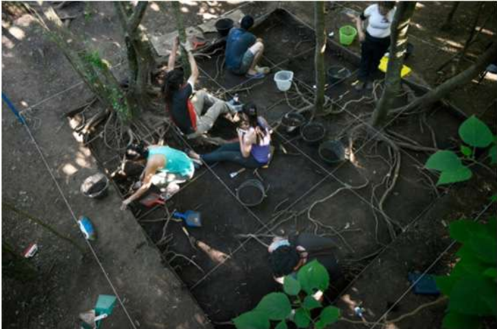
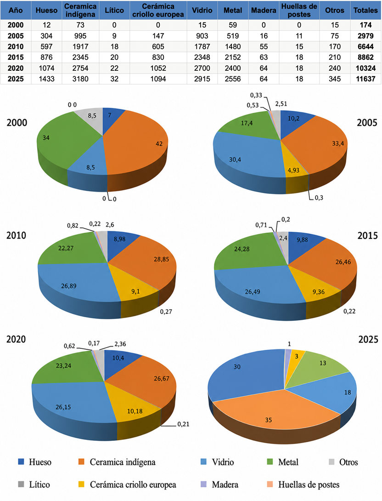
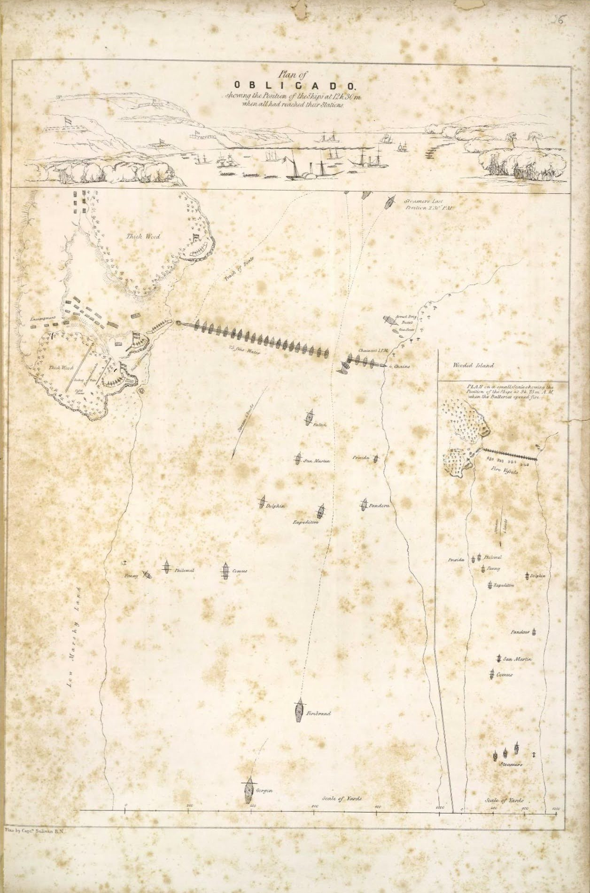

Sitio arqueológico Vuelta de Obligado
ProArHEP
Programa de Arqueología Histórica y Estudios Pluridisciplinarios

ProArHEP
Programa de Arqueología Histórica y Estudios Pluridisciplinarios
El sitio histórico y arqueológico de Vuelta de Obligado se encuentra dentro de un predio de Prefectura Naval Argentina (encargados de cuidar y preservar el patrimonio histórico). Hoy en día, al recorrer el lugar se puede encontrar un sendero que recorre la zona mostrando diversos monolitos conmemorativos de la batalla, se pueden apreciar una serie de carteles que relatan el contexto histórico de 1845 y otros que explican los trabajos arqueológicos desarrollados en la localidad. Al finalizar el recorrido se llega al Monumento a la Soberanía Nacional (inaugurado en 2010).
Dentro del predio, además, se encuentra el Museo del Sitio junto a distintos homenajes y reconocimientos.
Frente al sitio se encuentra una zona de paraje con acceso a la playa, áreas de acampe, parrillas y diversos puestos locales.

Excavaciones en monte. Foto Gerardo Dell´Oro, 2014.
Las investigaciones arqueológicas en Vuelta de Obligado comenzaron en mayo de 2000, lideradas por el Dr. Mariano Ramos y el equipo del programa ProArHEP (Universidad Nacional de Luján). Se trata de uno de los primeros proyectos en Argentina y América del Sur dedicado al estudio de un campo de batalla desde la Arqueología Histórica, acumulando más de 50 campañas de campo hasta la fecha.
Para reconstruir lo sucedido de forma precisa, el equipo trabaja combinando distintas técnicas científicas:

Tabla de hallazgos recuperados a lo largo de las campañas.
A lo largo de las campañas se han recuperado más de 11.600 objetos y fragmentos. Entre los hallazgos más destacados se encuentran:
"A más de un metro de profundidad, la hipótesis arqueológica se transformó en revelación histórica: descubrimos un imponente durmiente de madera de 30 centímetros de sección rodeado por la cadena en un nudo de amarre perfecto conocido como 'boca de lobo o presilla de alondra'. Era el sistema de anclaje original de las defensas náuticas de 1845, intacto tras 175 años de olvido."
"Mientras colaborábamos codo a codo con los operarios municipales y la retroexcavadora para liberar el madero, un grupo numeroso de vecinos y prefectos comenzó a agolparse alrededor de la cinta de peligro. Cuando la pala mecánica finalmente elevó la cadena liberada, el silencio de la playa se rompió con un aplauso cerrado, vitoreos espontáneos de emoción y un grito unánime de «¡Viva la Patria!» que retumbó en las barrancas."
"Mirar hoy la cadena de 46 eslabones resguardada en el Museo de Sitio es una experiencia que nos sigue emocionando... Recuperar las cadenas de la Vuelta de Obligado no fue una intervención arqueológica convencional; fue una experiencia profundamente movilizadora que nos marcó a fuego..."
— Marcelo Gómez
Mucho antes de la batalla de 1845, el paraje de Vuelta de Obligado ya estaba habitado. Durante las excavaciones arqueológicas en la playa y en las barrancas, los investigadores encontraron fragmentos de cerámica indígena, herramientas de piedra (talla lítica) y restos de huesos de animales consumidos por las comunidades originarias.
Estos hallazgos demostraron que los soldados de la Confederación construyeron sus trincheras y baterías sobre asentamientos indígenas que tenían cientos o miles de años de antigüedad. En las campañas más recientes, cerca del ingreso al parque, se lograron identificar pisos de ocupación indígena específicos para estudiar cómo vivían y qué recursos aprovechaban del río y del monte las poblaciones originarias.
Actualmente, el equipo lo trabaja como un proyecto radicado en la UNR (Universidad Nacional de Rosario).
El Museo de Sitio Vuelta de Obligado es el espacio encargado de cuidar, conservar y exhibir todo el patrimonio recuperado en las investigaciones.
En sus salas, el público puede observar de cerca los objetos originales utilizados durante el combate y la vida cotidiana en el campamento: proyectiles de cañón, pertrechos de los soldados, vajilla y envases de la época. La pieza central de la exposición es el tramo de cadena original con su madero de anclaje, rescatado de las aguas del Paraná.
El 20 de noviembre de 1845 se libró el enfrentamiento más importante y cruento de la Guerra del Paraná (1845-1846). El conflicto se inició cuando una escuadra combinada de dos potencias imperiales, Francia y Gran Bretaña, ingresó por la fuerza al río Paraná con el objetivo de navegar libremente los ríos interiores y comerciar directamente con las provincias del interior sudamericano sin la autorización de Buenos Aires.
Ante esta amenaza a la soberanía, el gobernador de la Confederación Argentina, Juan Manuel de Rosas, le encomendó al general Lucio N. Mansilla la organización de la defensa en el río Paraná.

Plano histórico de Sullivan de la batalla de 1845.
Cerca de las 9:00 de la mañana, al disiparse la neblina, los barcos europeos iniciaron el cañoneo sobre las barrancas. Desde la costa, las tropas argentinas respondieron el fuego mientras la banda de música ejecutaba el Himno Nacional, entonado por los combatientes.
Durante más de cuatro horas el combate fue feroz. Las baterías argentinas dispararon balas macizas, tarros de metralla y cohetes. Sin embargo, cerca de las 13:00 horas, en un segundo intento, las fuerzas invasoras lograron cortar las cadenas que cruzaban el río. Con el paso abierto, la flota enemiga pudo avanzar y acorralar las defensas patrias atacando desde dos frentes.
Hacia las 16:00 horas las baterías argentinas comenzaron a quedarse sin municiones. Los europeos iniciaron el desembarco de tropas en la playa, donde enfrentaron firmes cargas de la caballería y de los indios amigos argentinos. Tras 8 horas de combate, la batalla principal concluyó cerca de las 17:00 horas, dejando un saldo aproximado de 750 bajas, la mayoría del bando argentino.
Aunque militarmente las potencias europeas lograron abrirse paso y continuar hacia el norte, el enorme desgaste sufrido en Obligado y los continuos ataques que recibieron en los combates posteriores del Paraná (como El Tonelero, Quebracho y San Lorenzo) hicieron que el intento de dominación comercial fracasara económicamente.
In 1974, la fecha del 20 de noviembre fue declarada oficial de alcance nacional como el Día de la Soberanía Nacional.
En 2010, se inauguró el complejo monumental y se estableció el feriado nacional, consolidando a Vuelta de Obligado como un símbolo histórico irrenunciable de la soberanía y la resistencia del pueblo argentino.